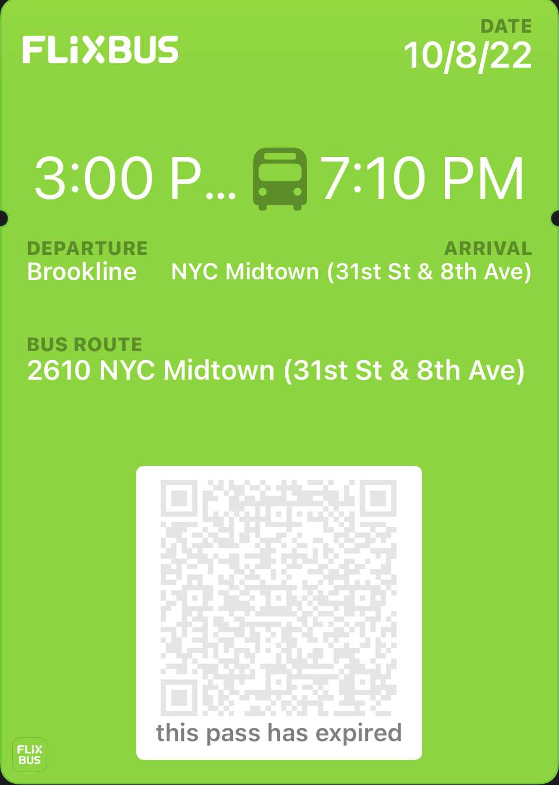

The alignment in the Java book cover is executed extremely well. Everything is well
spaced out
and all words in the textbook begin in the center and are flushed to the left. Not only are the words
flushed-left, but so is the tree shown. The name of the textbook and the series are uniform, and the only aspect
that's not uniform is the author's names. This shows uniformity, and allows users to be able to distinguish the
aspects of the book(e.g Author, series, name, edition).
The Introduction to Data-Centric AI poster fails the alignment principles. There's a lack of uniformity in the
execution of the poster. Initially, it begins with large centralized letters, where the title of the event is and
is placed in centered alignment, followed by a flush left description of the event, a highlighted centerered
alignment of the event website, and a flush left date and flush right time and location. This whole poster fails
to align. The best way to alter the poster is to structure the event details through association.
Group B principles: Repetition, Proximity:
Delta airlines, Amtrack, and Flixbus mobile tickets
Delta -- Passes repetition and Proximity
Amtrack -- Passes repetition and Proximity

FlixBus -- Fails repetition and partially passes Proximity
Repetition:
Both the Delta airlines and Amtrak tickets show repetition in their design. For
example, their boarding and destination stations/airports are abreviated in capital letters (BOS, LGA, NYP)
and
the location is added in smaller font on top(BOSTON, NYC-LAGUARDIA, BOSTON, MA , NEW YORK, NY).
The Flixbus however, fails repetition. The ticket itself is difficult to understand. It fails
repetition in terms of the Departure and Arrival. It shows the bus departs from Brookline, and states that it
arrives in "NYC Midtown(31st St and 8th Ave)". This doesn't follow repetition principles, but can be easily
fixed by removing the address(and instead making it be "NYC Midtown") It also fails the repetition principles
in
temr sof the departure and arrival times, and as seen, the departure time even gets cut off. This could be
fixed
by making the time smaller, such that it can support 4 digit times(e.g. 12:00PM)
Proximity:
All three of the mobile tickets pass the proximity test in terms of the
departures and arrivals. All departure and arrivals are on the same line.
FlixBus once again fails. This time, the design failure derrives from the Bus Route. It's a very
large section, and a repetiton of the arrival. It combines the bus number, the station name, and the
(partial)address. These three things aren't related and so, the bus number is the only thing that must be
kept, as it is the only one that fits the catebury of "BUS ROUTE".